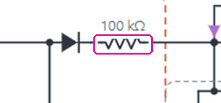
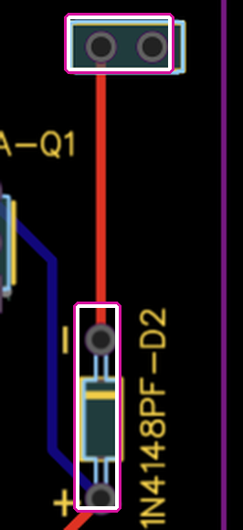
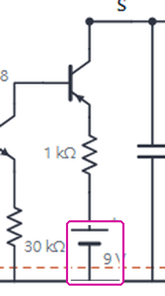
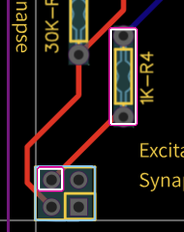

0 電路圖與 PCB 的差別
底圖：講義的 #3-1 電路圖。紅色＝PCB 實際的接法。點紅色標記看這個差別造成什麼問題。兩處都在 excitatory 突觸板上（#3-1、#3-2 用同一塊）；inhibitory 突觸板和電路圖一致。選「理想」電路時，#3-1、#3-2 的「D2 → Post」和「突觸 Q1 電源」可以改成講義的接法。
數字對照：照電路圖 vs 照 PCB模擬，V+ 8.44 V（10-21 實測），Pre 按 15–20 ms
| 照電路圖（100 kΩ、9 V） | 照 PCB（直接、排針 V+） | |
|---|---|---|
| #3-1 原版 active membrane：#1 的 EPSP | 0 mV | 0 mV |
| #3-1 HW2 真正的 AP、突觸不加東西：#1 的 EPSP | 0 mV（S 0.23 V） | 0 mV（S 0.23 V） |
| #3-1 真正的突觸（820 kΩ 並 1.5 MΩ）：#1／#5 的 EPSP | 186／80 mV，#1 比 AP 晚 102 ms 到峰 | 911／236 mV，#1 晚 4 ms |
| #3-2 真正的突觸：觸發 Post AP 要幾個 EPSP（間隔 50／100／500 ms） | 3／2／6 個也不夠 | 2／2／2 |
原版 membrane 推不動突觸（Pre 只到約 1.5–2.2 V，10-21 實測約 1.9 V；Q2 要約 6 V），所以兩處差別在原版電路看不出來；突觸打開之後，差別 1 讓 EPSP 小約 5 倍、慢約 100 ms。差別 2 在所有情況下都沒有影響：S 最多只到約 2.4 V（並 1 MΩ），離電池電壓很遠。兩欄的 active membrane 都是 PCB 版。模擬用本頁的 engine.js（×1 探棒）。
和電路圖一樣的地方inhibitory 突觸板、1.5 V 電池
- Inhibitory 突觸板：820 kΩ → 1N4148 → 2N3904（基極 10 nF ∥ 100 kΩ，射極 30 kΩ）→ 2N4403（集極 15 kΩ 到 GND）；S = 4.7 µF ∥ 200 kΩ；S → 100 kΩ（100K-R5）→ Post。和講義電路圖相同。
- 1.5 V 電池：板上沒有電池座。Q1 射極接左下 2×2 排針的方形焊墊，S 接方形焊墊同一列的另一支；電池夾在這兩支之間（+ 接 Q1 射極、− 接 S），和電路圖的接法一樣。
- Excitatory 其他元件：820 kΩ、D1、10 nF ∥ 100 kΩ、30 kΩ、1 kΩ、4.7 µF ∥ 200 kΩ 都和電路圖相同。
追線方法和 HW2 一樣：放大講義的 PCB 圖，從每個焊墊沿銅箔追到另一端；紅色是正面、藍色是背面；TO-92 方形焊墊是射極。排針腳位沿用 HW2（netlist）。
1 D2 後面：電路圖有 100 kΩ，PCB 直接接 Post


造成的問題
- 原版 membrane 看不出來：Pre 只到約 1.5–2.2 V（10-21 實測約 1.9 V），突觸的 Q2 沒打開，S 是 0，有沒有 100 kΩ 都一樣沒有 EPSP。
- 突觸打開後，EPSP 大約 5 倍、快約 100 ms：真正的突觸（820 kΩ 並 1.5 MΩ）一個 AP，#1 是 911 mV、比 AP 晚 4 ms 到峰；有 100 kΩ 時是 186 mV、晚 102 ms。#5 是 236 vs 80 mV。
- #3-2 比較容易觸發：觸發 Post AP 要 2 個 EPSP（間隔 50–500 ms 都是）；有 100 kΩ 時要 2–3 個，間隔 500 ms 時 6 個也不夠。
- 沒有 100 kΩ，S 經 D2 直接灌進 #1，#1 的上升幾乎跟著 S；有 100 kΩ 時要經 100 kΩ × 1 µF 慢慢充。
PCB 佈線圖：1N4148PF-D2 的負極（−）一條紅色走線直通右上 PostSynapse 的 Intracellular 排針，中間沒有電阻。Inhibitory 板的 100K-R5 有畫在 PCB 上。
2 Q1 的電源：電路圖是獨立的 9 V 電池，PCB 沒有電池，1 kΩ 接排針的 V+


造成的問題
- 電壓是 Stimulator A 的電池：V+ 經 Pre 那一疊板子的排針送到突觸板。本頁預設 8.44 V（我們 10-21 用電表量的）；HW2 別組的板子量到 7.8 V。電路圖是 9 V。
- 模擬中看不出差別：S 的上限從約 9 V 變成約 V+，但 S 最多只到約 2.4 V（820 kΩ 並 1 MΩ），Q1 的電流由 Q2 決定，不是由電池決定。只有 S 接近電池電壓時才會有影響：10-21 我們並 100 kΩ 時 EPSP 頂在約 6.5 V，這時天花板就是 V+ 減掉 Q1、1 kΩ 和 D2 的壓降，換成 9 V 電池會高約 0.5 V（推測）。
- 突觸板和 Stimulator A 共用一顆電池，突觸 Q1 的電流也從這顆電池出。
PCB 佈線圖：1K-R4 下端走紅線到左下 2×2 排針、方形焊墊對角那支（HW2 追出來是 V+）。板上沒有電池座。
1 摘要與注意事項
我的電路只有 #3-1 不同：820 kΩ 兩端並了 100 kΩ。其他三個電路和原版相同。左邊的「原版／我的／理想」切換只影響下面的模擬區；這張表三種一起看。
| 項目 | 原版 | 我的 | 理想：真正的突觸（預設） | 理想：只改 FI | 理想：HW2 真 AP |
|---|---|---|---|---|---|
| Pre active membrane | 原版（AP 約 1.9 V） | 同原版 | HW2 真 AP（約 5.4 V） | R13 換 1 kΩ（AP 約 7.6 V） | HW2 真 AP |
| 突觸 820 kΩ | 原樣 | 並 100 kΩ（#3-1，2026-10-21） | 並 1.5 MΩ | 原樣 | 原樣 |
| Post active membrane（#3-2、#3-4） | 原版 | 同原版 | HW2 真 AP | 原版 | HW2 真 AP |
| D2 → Post、Q1 電源 | PCB：D2 直接接、Q1 用排針 V+ | 同原版 | 同原版 | 同原版 | 同原版 |
| 結果（#3-1 #1 EPSP） | 沒有（Q2 不導通） | 約 6.5 V，飽和（實測） | 約 0.91 V，能疊加 | 約 0.07–0.22 V | 沒有 |
量測注意2 項 · 怎麼量、量哪裡
量測注意事項五參數、延遲、示波器
- 五參數：stimulation current／condition、peak amplitude（波峰 − 基線；IPSP 是負的）、half-width（50 % 高度的寬度）、rise τ、decay τ（波峰到剩 37 %）。“decade” 理解成 decay。
- rise τ：AP 照 HW2，從刺激開始到 63 %；EPSP／IPSP 從它的起始點到 63 %。起始點 = 振幅 10 % 的時間。延遲 = CH2 − CH1（起始點、波峰各一個）。模擬區右側會自動算，報告裡要寫清楚用哪個定義。
- 示波器：CH1 = Pre Vm（1 V/div），CH2 = Post（EPSP 50–100 mV/div，IPSP 20–50 mV/div；#3-2、#3-4 1 V/div），100 ms/div，Single、上升緣觸發。
- 散佈圖（Q4）：兩下 SW A，間隔 6 種以上（例如 75、100、150、200、300、500、800 ms），每個間隔量疊加後的峰值。手按的話用 Roll、慢速度看間隔；右側「ISI 散佈圖」會算出預期。
- 第一個 vs 最後一個 RC：CH1 改量 #1、CH2 量 #5，同一次刺激兩條一起看。
- 每次刺激之間至少隔 2 秒，讓 4.7 µF 放完電（τ 約 1 秒）。
- 電池：本頁預設 V+ = 8.44 V，是我們 10-21 用電表量的（之前是用 HW2 推估的 7.0 V）；HW2 量到的 7.8 V 是別組的板子。電池會越用越低，每個區域都可以用滑桿改。
- 用「平台 ÷ 100 kΩ」算刺激電流會偏低：Stimulator 的輸出最高約 V+ − 0.7 V（8.44 V 時約 7.7 V，7.8 V 時約 7.1 V，HW2 手算）。只接 1 個 Passive unit 時，平台碰到這個上限就被削平，算出來的電流比設定的小（HW2 #2-1：平台 6.97 V 就是卡在上限）。刺激電流用電表串在 Stimulator 輸出量。
- 可變電阻 0–10 kΩ 是照絲印：照 10 kΩ 算，Stimulator 最小約 44 µA。但 HW2 我們組的板子記到 15.6 µA（#2-2 Q3），實際的電位器可能大於 10 kΩ（沒量）。本頁滑桿只到 10 kΩ。
加上之後要量的確認夾對
| 量 | 條件 | 預期 |
|---|---|---|
| Pre Vm | 放開 | 約 0.97 V（突觸的 820k ∥ 1.5M 也拉一點） |
| Q2.B | 放開／AP 時 | 約 0.11 V／約 0.71 V |
| S（Excitatory） | 放開／一個 AP 後 | 0 V／約 1.4 V，約 1 秒內放掉 |
| S（Inhibitory、Passive） | 放開／一個 AP 後 | 約 0.10 V／約 −0.18 V |
| #1（Passive） | 放開 | 約 0.15–0.16 V（Stimulator B 漏電） |
共同背景4 項 · HW2、HW3 共用：電晶體規則、Stimulator 漏電、AP 的定義、模擬方法
電晶體與電路的基本規則後面每個推導都用到
- 導通門檻：矽電晶體的 B–E（PNP 是 E–B）接面要約 0.5–0.65 V 才有明顯電流。1N4148 二極體也一樣，電流小時約 0.3–0.5 V。這是矽 PN 接面的性質，不是這套板子特有的。
- 指數關係：電晶體的電流 IC ≈ IS · eVBE/VT，VT = kT/q ≈ 25.85 mV（室溫）。換算：VBE 每少約 60 mV，電流少 10 倍（25.85 mV × ln 10 = 59.5 mV）。所以差 0.4 V 不是少一點，而是少約 106.6 倍。
- 放大倍數 β：IC = β · IB。模擬用 2N4403 β = 150、2N3904 β = 200（模型參數；2N4403 規格書的範圍約 100–300，每顆不同）。
- 歐姆定律與 KCL：I = V／R；流進一個節點的電流 = 流出的電流。靜止時沒有電容電流，只看電阻。
- 電容：電壓不能瞬間改變，dV/dt = I／C；和電阻並聯時，放電的時間常數 τ = R·C（過 τ 剩 37 %）。
- 分壓：兩顆電阻串在 V 和地之間，中點 = V × R下／(R上 + R下)（中點沒有其他電流時才成立）。
Stimulator 的 6 µA 漏電（靜止 0.6 V）：意外還是刻意？判斷：意外（PCB 走線錯），把握高但不是確定
去年的 FI、SO 和今年一樣，今年重新設計的是 Stimulator：Qpass + Qsense 組成定電流源，I ≈ VEB(Qsense)／(pot + 7 kΩ)，電流不隨 Vm 改變。漏電來自 Qsense 的射極接在 SW 之前（V+），不是 SW 之後（ST.P）。
| Qsense 射極 | SW 放開：輸出 | SW 放開：耗電 | SW 按下：輸出（pot 0.7 kΩ） |
|---|---|---|---|
| SW 之後（講義電路圖） | 0 | 0 | 約 90 µA |
| SW 之前（PCB 實際） | 6.3 µA → Vm 0.62 V | 0.95 mA | 約 90 µA（一樣） |
認為是意外的理由：
- 設計者自己的電路圖沒有漏電：講義上 Qsense 的射極畫在 SW 之後，這也是兩顆電晶體限流電路的標準接法。PCB 把它接到旁邊的 V+，只差 SW 的一腳。
- SW 放開時一直耗 0.95 mA：Qsense 在放開時全開，電流經 7 kΩ 到地。電池扣著、沒有開關，只要沒拔電池 Stimulator 就一直在耗電（9 V 電池約 500 mAh，三週左右就用完）。你們量到 7.8 V 而不是 9 V 也符合這點（只是符合，不是證明）。沒有人會設計一個「關掉」時還耗 1 mA 的電流源。
- 漏電大小由 β 決定，不是設計值：漏電 = IC(Qsense)／β。β 100／150／200／300 時是 9.4／6.3／4.7／3.1 µA，靜止 0.93／0.62／0.47／0.31 V；電池從 9 V 掉到 7 V，漏電也從 7.4 掉到 5.5 µA。刻意的偏壓會用一顆固定電阻（像真正的 AP 用的 V+ → Vm 330 kΩ），不會靠一個差三倍的 β。
- 它讓作業量不了：#2-2 不按也自己冒小峰，Q5 的「靜止電位」沒有定義，五參數要用觸發準位去挑；#2-1 的被動鏈也多了約 0.2 V 的基線。重新設計 Stimulator 的目的是乾淨的電流源，「放開 = 0」是電流源最基本的性質。
- PCB 和電路圖還有別的不一致：R13 100 kΩ（圖 1 kΩ）、FI 沒有自己的電池、R2 的位置附的是 100 Ω（圖 3 MΩ）、Passive PCB 底板沒串 V+。表示板子沒有逐一對照電路圖檢查過，一處接錯並不意外。
刻意的可能：有人可能想讓 Vm 靜止時有一點去極化、離門檻近一點，讓弱的 FI（R13 100 kΩ）比較容易觸發。但 0.62 V 剛好落在 FI 門檻（約 0.6 V）和 Slow out 的極限（約 0.6 V）上，結果是自發放電、沒有穩定靜止，和這個目的相反；三個約 0.6 V 撞在一起比較像巧合。
怎麼查（不用三用電表）：SW 放開時用示波器量 ST.R（Qsense 集極、7 kΩ 上端）。約 6.6 V 就表示 Qsense 正在耗 6.6／7k ≈ 0.95 mA；照講義接法應該是 0 V。也可以問助教去年的 Stimulator 和今年的 PCB 檔，看 Qsense 射極原本接哪。
AP 的定義（文獻）換成這個電路的判準
Barnett & Larkman（2007）把 AP 描述成膜電位短暫反轉、分三個主要階段：去極化、再極化、慢慢恢復的後過極化；Na⁺ 通道的招募是再生性的，所以一過門檻就是完整的 AP（all-or-nothing），去極化會越過 0 mV 但停在 ENa 之前；Na⁺ 通道失活造成絕對不反應期，K⁺ 通道關得慢造成後過極化與相對不反應期。Purves 等人的教科書（第 2–3 章）也用門檻、自我增強的 Na⁺ 通透度上升、較慢的 K⁺ 通透度上升來描述 AP；這個電路的 FI／Slow out 就對應 Hodgkin & Huxley（1952）模型裡的 Na⁺／K⁺ 電流。
| 判準 | 文獻 | 這個電路怎麼驗 |
|---|---|---|
| C1 門檻 | 過門檻才有 AP，之下只有局部反應 | 按壓長度由短到長：未觸發時和拔掉 FI 一樣；超過某長度就觸發 |
| C2 all-or-none、再生性 | 一過門檻就是完整 AP，大小不隨刺激變 | 不同按壓長度、電流的峰值幾乎相同；上升 dV/dt 遠大於被動充電 |
| C3 峰值 | 越過 0 mV、停在 ENa 之前 | 峰值遠高於門檻、低於 V+（內向電流的反轉電位）。「越過 0 mV」在這裡沒有意義：Vm 對 GND 量，靜止本來就是正的 |
| C4 再極化 | K⁺ 外向電流拉回 | Slow out 拉回，比被動放電快 |
| C5 後過極化 | 低於靜止電位、慢慢恢復 | AP 後 Vm 低於靜止再回來 |
| C6 不反應期 | 剛發完 AP 不能（或較難）再發 | AP 後不同間隔再按一次 |
來源：M. W. Barnett, P. M. Larkman, “The action potential,” Practical Neurology 7:192–197 (2007)；D. Purves et al., Neuroscience 2nd ed., ch. 2–3（NCBI Bookshelf）；A. L. Hodgkin, A. F. Huxley, J Physiol 117:500 (1952)。
模擬方法和 Python 版相同
- 修正節點分析、backward Euler（Δt = 0.2 ms）、阻尼 Newton、Ebers–Moll 電晶體與二極體模型；DC 不收斂時 gmin stepping。
- 10-12 起每個節點加 10 pF 雜散電容（配線；×1 探棒約 100 pF 只接在量測點，和 1 µF 比可忽略）：拔掉 Leak 時 Vm 節點沒有電容，FI 自鎖在數值上沒有唯一解（S+FI 會卡住）。時間常數約 1 µs，波形幾乎不變（重跑所有檢查，差 ≤ 0.07 V；R2 = 1 MΩ 時「按下的第一個峰」看落在小峰的哪個階段，1.75–2.06 V）。另外 Newton 在 20 次迭代後、各節點 KCL 誤差 < 10 pA 也算收斂。
- 參數：2N3904 IS 6.7 fA、β 200；2N4403 IS 10 fA、β 150；1N4148 IS 2.52 nA、n 1.752。
- HW3 實驗台的引擎是 hw3-lab/engine.js：同樣的元件模型，接成 Pre → 突觸 → Post 的電路。
- HW2 網頁引擎 engine.js、電路圖 schematic.js；Python 在 hw2-debug/sim/（
check_ap.py、check_23.py等）。
原版電路4 項 · 老師指定的接法：模型、問題、#3-1 為什麼沒有 EPSP、和生理的對應
基礎模型＝助教給的電路原版＝老師對全班指定的接法
- 突觸板照 PCB 實際接法（從講義 PCB 圖追線）。Excitatory 的 D2 後面沒有 100 kΩ：講義電路圖畫了，PCB 上 D2 的負極直接走線到 PostSynapse 排針。Inhibitory 的 100 kΩ（R5）PCB 上有。
- Excitatory：820 kΩ → 1N4148 → 2N3904（基極 10 nF ∥ 100 kΩ，射極 30 kΩ）→ 2N4403（射極 1 kΩ 接 V+）→ S（4.7 µF ∥ 200 kΩ）→ 1N4148 → Post。S 到地那顆：講義電路圖與 PCB 圖都是 200 kΩ（R5），我們拿到的板子絲印是 100K-R15（照片，2026-10-26，阻值沒量）。
- Inhibitory：輸入級相同；2N4403 的射極接 1.5 V 電池的 +、電池 − 接 S，集極 15 kΩ 到 GND；S（4.7 µF ∥ 200 kΩ）→ 100 kΩ → Post。
- 推測Excitatory 的 V+ 從 2×2 排針來（= Stimulator 的電池；本頁預設 8.44 V，是我們 10-21 用電表量的；HW2 的 7.8 V 是別組的板子）。講義畫成獨立的 9 V；如果你另外接 9 V 電池，Q1 開的時候 S 會高一點，其他不變。
- Pre／Post active membrane = HW2 的板子，預設原版（Slow out 的 R2 = 1 MΩ，大家都已換好）。選「理想」電路時可以把 Pre、Post 改成 HW2 真正的 AP，電阻值可以直接輸入。
- Passive unit：1 µF ∥ 100 kΩ，上排 10 kΩ；細胞外照講義圖直接接 GND（HW2 的 100 Ω 影響可忽略）。Stimulator A、B 都是 HW2 的 Stimulator（放開時漏約 6 µA）。×1 探棒（1 MΩ，和 HW2 一樣），CH1、CH2 各接一支。
原版電路的問題與量測時會看到的現象為什麼量不出題目要的東西；量的時候要注意什麼
A 為什麼原版量不出題目要的東西
- 突觸的門檻約 6 V，原版 Pre 的 AP 約 1.5–2.2 V（10-21 實測約 1.9 V；R13 = 100 kΩ 的結果）：Q2 不導通，#3-1–#3-4 怎麼按都沒有 EPSP／IPSP（模擬 S 不到 1 mV；10-21 實測 Q2 基極約 0.17 V、#1 沒有 EPSP）。HW2 真正的 AP（約 5.4 V）也不到。照實記錄「沒有 PSP」，並附 Pre 和 Q2 基極的波形。推導見「#3-1 為什麼沒有 EPSP」。
- Excitatory 的 D2 後面沒有 100 kΩ（PCB 和講義電路圖不同）：S 經 D2 直接灌進 Post，EPSP 很快、很大；有 100 kΩ 時（真正的突觸）#1 的 EPSP 小約 5 倍（0.91 → 0.19 V）、到峰晚約 100 ms。原版因為 Q2 不導通，有沒有這顆都一樣沒有 EPSP。選「理想」時「D2 → Post」可以輸入 100 kΩ 對照。
- Inhibitory 接在 active membrane 上會變成 leak：S 的 200 kΩ 經 100 kΩ 接到 Post，靜止從 1.23 降到 1.06 V，門檻變遠。
- 原版 Post（#3-2、#3-4）不會連續發放：#3-2 的 Post（模擬，V+ 8.44 V）不按 B 也每秒冒約 8 個 1.5 V 小峰（實體板還沒量）；按 B 10 ms 到約 1.5–2.1 V。#3-4 的 Post 被突觸的 100 kΩ + 200 kΩ 拉成 leak，安靜停在 0.46 V，按 B 10 ms 到約 1.85 V，按住 B 只有一個 2.6 V 的峰、之後停在 0.78 V。#3-4 Q3 的「頻率變化」量不到。
- 「拔掉 1.5 V 電池」照字面是開路（#3-3、#3-4）：Q1 到 S 斷開，突觸完全沒有輸出，變成「沒有突觸」而不是「改變驅動力」。要用一條線把電池的兩個夾點接起來。模擬兩種都可以選。
B 量的時候會看到的現象
- 原版 Pre 會不會自己冒小峰：模擬和實測不同。Stimulator A 放開時漏約 6 µA，把 Pre 墊高。模擬：V+ 7.0 V 時 Pre 安靜停在約 0.45 V；7.8 V 以上墊到 FI 門檻附近，不按也每秒冒 1.5 V 小峰（8.44 V 時約 7 個）。實測：我們 10-21 的截圖（V+ 8.44 V）在兩次按壓之間 Pre 是平的（約 0.5–0.64 V）；差在哪裡還沒查。觸發用 CH1 上升緣，準位約 0.7–1.0 V（10-21 用 0.72 V 可以）。
- 基線不是 0：Stimulator B 放開時漏約 6 µA，#1 的基線約 0.15–0.20 V。振幅一律用「波峰 − 基線」。
- #3-3 Passive 拔掉電池（接跳線）後 IPSP 消失：Post 靜止約 0 V，反轉電位也約 0 V，沒有驅動力。
- 講義的小錯：#3-4 Q4 說重做「#3-4-5 and #3-4-6」，這兩題不存在，應該是 Q2、Q3；檔名寫
HW02_…，應該是 HW03（交之前問助教）。
問題：#3-1 為什麼沒有 EPSP（從假設一步一步算）突觸的門檻約 6 V；改法要多少；R15 100k／200k 有沒有關係
一句話：Pre 的 AP 經過 820 kΩ : 100 kΩ 分壓後，只剩約 0.17 V 到 Q2 基極，遠低於 Q2 導通要的約 0.6 V；Q2 不開，後面全部不動。要讓 Q2 開，Pre 的 AP 要約 6 V，而我們的 Pre 只有約 1.9 V。
用到的電晶體規則（導通門檻、每 60 mV 差 10 倍、β）見共同背景「電晶體與電路的基本規則」。
1 訊號怎麼走：為什麼先算 Q2 的基極
Excitatory 突觸板（照 PCB 追線，MB-0064）：Pre Vm → R1 820 kΩ → D1 → Q2 基極（10 nF ∥ 100 kΩ 到地）→ Q2（2N3904，射極 30 kΩ 到地）→ Q2 集極拉 Q1 基極 → Q1（2N4403，射極經 1 kΩ 接 V+）把電流灌進 S（4.7 µF ∥ R15 到地）→ D2 → Post #1。
這是一串開關：Q2 不開 → Q1 沒有基極電流 → S 不充電 → D2 不導通 → #1 沒有 EPSP。所以第一個要檢查的變數是 AP 時 Q2 基極的電壓：它過不了約 0.6 V，後面的元件值（包括 R15）都不用看。
2 算 Q2 基極：原版電路（和 10-21 實測對照）
0.17 V 比 0.6 V 少約 0.43 V。用第 0 條規則：Q2 的電流比剛導通時少約 100.43/0.06 ≈ 107 倍，等於沒有。模擬裡 S 最高 0.001 V、#1 沒有任何變化。
3 反推：Pre 的 AP 要多大，Q2 才會開
推測突觸板是照講義的 active membrane 設計的：講義的 FI 畫 R13 = 1 kΩ，AP 會接近 V+，就過得了 6 V。PCB 的 R13 是 100 kΩ，FI 最多只送約 70 µA，AP 只到約 1.9 V（HW2 已量過）。所以問題不是突觸板接錯，而是突觸板的門檻和 PCB 版 active membrane 的 AP 大小對不上。
4 改法要多少：三種方向的算式
方向 A：820 kΩ 兩端並一顆 Rp（降低 R1，讓分壓比變大；Pre 不動）。要算的是 Rp 的上限：
並 100 kΩ 時 Q2.B 比門檻高約 0.2–0.3 V，Q2 電流大 103–105 倍，Q1 全開，S 一下就充到天花板（約 V+ 減掉 Q1 的壓降）。這就是 10-21 量到的約 6.5 V、飽和的 EPSP：大小由天花板決定，不由輸入決定，所以第二個 AP 加不上去（MB-0075）。要看疊加，Rp 要選在門檻附近（150–200 kΩ）。
方向 B：Pre 的 R13 換成講義的 1 kΩ（加大 AP；突觸不動）：FI 能送 mA 級電流，AP 約 7.6 V（模擬）→ Q2.B ≈ (7.6 − 0.45) × 0.109 ≈ 0.78 V（模擬 0.72 V）→ #1 EPSP 約 0.07–0.2 V，不飽和、能疊加。見下一張「只改 FI」。
方向 C：兩邊都改（HW2 真 AP ＋ 820 kΩ 並 1.5 MΩ）：R1_eff = 530 kΩ → Q2.B = (5.42 − 0.45) × 100/630 ≈ 0.79 V（模擬 0.79 V）→ #1 EPSP 約 0.91 V。見「改法：820 kΩ 兩端並 1.5 MΩ」。
三個方向的模擬都可以在 #3-1 區域選「理想」→「從原版開始」，再到「1 電路焊接」直接輸入電阻值試。
5 R15（S → GND）是 100 kΩ 還是 200 kΩ：和「沒有 EPSP」無關
三個來源不一致：講義 #3-1 電路圖在 S 到地畫 200 kΩ，D2 後面另外畫一顆 100 kΩ（串到 Post）；講義的 PCB 圖在同一個位置標 200K-R5，D2 後面沒有電阻；我們實際拿到的板子（照片，2026-10-26）那個位置的絲印寫 100K-R15。板子上電阻的色環從照片看不清，阻值沒量。
它在電路裡做什麼：R15 和 4.7 µF 並聯，是 S 的放電路徑（傳導物質的清除）。它只在 S 已經被 Q1 充電之後才有作用：決定 S 退回去的快慢 τ = 4.7 µF × R15（200 kΩ：0.94 s；100 kΩ：0.47 s），也讓 S 的最高點低一點。它不在 Q2 前面，所以不會影響 Q2 開不開。
| 情境（模擬，V+ 8.44 V，按 SW A 20 ms） | Q2 基極 | S 峰值 | #1 最高 | 0.5 s 後 S |
|---|---|---|---|---|
| 原版，R15 200 kΩ | 0.20 V | 0.001 V | 沒有 EPSP | 0 |
| 原版，R15 100 kΩ | 0.20 V | 0.000 V | 沒有 EPSP | 0 |
| 並 100 kΩ，R15 200 kΩ | 1.02 V | 4.72 V | 4.19 V | 1.95 V |
| 並 100 kΩ，R15 100 kΩ | 1.02 V | 4.55 V | 4.02 V | 1.73 V |
| R13 1 kΩ，R15 200 kΩ | 0.72 V | 1.13 V | 0.69 V | 1.05 V |
| R13 1 kΩ，R15 100 kΩ | 0.72 V | 1.02 V | 0.58 V | 0.93 V |
「#1 最高」是絕對值，含 Stimulator B 漏電墊起來的基線（原版約 0.2 V；並 100 kΩ 時模型的 Pre 會自己冒小峰，基線約 0.5–0.6 V）。模擬並 100 kΩ 的 EPSP（約 3.6 V）比 10-21 實測的約 6.5 V 小，差在哪裡還沒查。可以在「理想」裡把 S → GND 改成 100 kΩ 自己看。
電路和生理的對應
| 電路 | 生理 |
|---|---|
| 820 kΩ + D1 + Q2 的門檻 | 突觸前末梢：AP 夠大才打開電壓門控 Ca²⁺ 通道、釋放神經傳導物質 |
| 10 nF ∥ 100 kΩ（τ ≈ 1 ms） | Ca²⁺ 進入與釋放的時間 |
| Q1 把 S（4.7 µF）充電／放電 | 突觸間隙裡的神經傳導物質濃度、受體打開 |
| 200 kΩ（τ ≈ 1 s） | 傳導物質的清除（回收、分解）；τ 長所以疊加窗很長 |
| D2 → Post（Excitatory） | 陽離子通道（AMPA、nicotinic AChR）：內向電流、去極化 |
| 1.5 V 電池 → Post（Inhibitory） | Cl⁻ 通道（GABAA、glycine）：ECl 低於靜止，過極化 |
| 拔掉電池（跳線） | ECl 接近靜止：shunting inhibition，電位變化小但仍會降低興奮性 |
| #1 → #5 | 近端 vs 遠端樹突：被動纜線的衰減與延遲 |
非原版電路（我的、理想）3 項 · 「我的」＝已經做出來的理想電路；改法和驗證
只改 FI：把 Pre 的 R13 換成 1 kΩ突觸不動，原版 membrane
講義的 FI 畫 1 kΩ，PCB 的 R13 是 100 kΩ。R13 限制內向電流，所以原版 AP 只到約 1.9 V。只把 Pre 的 R13 換小（或在 R13 兩端並一顆），突觸板完全不動（模擬，原版 membrane，按 SW A 20 ms）：
| Pre 的 R13 | AP 峰值 | Q2 基極 | S 峰值 | #1 EPSP |
|---|---|---|---|---|
| 100 kΩ（PCB） | 1.84 V（7.0 V：2.43） | 0.17 V | 0 V | 0 |
| 10 kΩ | 4.30 V（4.65） | 0.42 V | 0.01 V | 0 |
| 2.2 kΩ | 6.56 V（6.34） | 0.63 V | 0.79 V | 約 0（7.0 V：16 mV） |
| 1 kΩ（講義） | 7.57 V（6.37） | 0.72 V | 1.13 V | 221 mV（7.0 V：73 mV） |
V+ 8.44 V；括號是 V+ 7.0 V。8.44 V 時模型的 Pre 每秒自己冒約 7 個小峰，所以 8.44 V 的 EPSP 可能包含自發峰的疊加；7.0 V 的 73 mV 是單一 AP 的。和「820 kΩ 並 100 kΩ」（EPSP 約 6.5 V、飽和）比，只改 FI 的 EPSP 小很多、不會飽和，比較像真的突觸；但 #3-2 一個或兩個 EPSP 可能推不動 Post（沒算）。R13 = 1 kΩ 時 FI 峰值電流約 7 mA，4403 和 1/4 W 電阻都撐得住（推測）。
改法：820 kΩ 兩端並 1.5 MΩ兩塊突觸板都一樣
| 加什麼 | 夾在哪 | 為什麼 |
|---|---|---|
| HW2 真 AP 的 6 顆 | Pre（和 #3-2、#3-4 的 Post）active membrane | 有門檻、all-or-none、再極化、後過極化（見 HW2 實驗台） |
| 1.5 MΩ | 突觸板 820 kΩ（R1）兩端 | R1 有效值 530 kΩ：Q2.B = (5.42 − 0.45) × 100/630 ≈ 0.79 V（模擬 0.79 V），AP 時 Q2 打開；靜止（Pre 1.16 V）時模擬 0.14 V，關著 |
| 1.5 V 電池的跳線 | 電池兩個夾點（#3-3、#3-4 Q4） | 「拔掉電池」= 換成導線，突觸仍然接著，只是驅動力改變 |
選 1.5 MΩ 的理由（模擬，Pre = HW2 真 AP、按 15 ms）：
| 820 kΩ 並 | S 峰值 | EPSP #1／#5 | 觸發 Post 要幾個 EPSP | IPSP #1 |
|---|---|---|---|---|
| 不加 | 0.23 V | 0／0 mV | — | −20 mV |
| 4.7 MΩ | 0.62 V | 61／20 mV | 5（間隔 100 ms） | −28 mV |
| 3.3 MΩ | 0.80 V | 186／54 mV | 3 | −30 mV |
| 2.2 MΩ | 1.12 V | 464／123 mV | 2 | −33 mV |
| 1.5 MΩ | 1.59 V | 911／236 mV | 2（間隔 50 ms–1.2 s） | −37 mV |
| 1 MΩ | 2.37 V | 1670／429 mV | 1（單一 EPSP 就觸發） | −41 mV |
Q2 是指數關係，實際電晶體的 IS 差兩三倍就差一級：一個 AP 看不到 EPSP → 改 1 MΩ；一個 EPSP 就觸發 Post → 改 2.2 MΩ。IPSP 被 15 kΩ 和 1.5 V 電池限制（Q1 最多約 90 µA），換電阻幾乎不變。
驗證：每一題（真正的突觸）模擬，按 15 ms、可變電阻 0
| 題目 | 結果 |
|---|---|
| #3-1 Excitatory → passive | |
| Q3 一個 AP | Pre AP 5.4 V；#1 EPSP +0.91 V，比 AP 波峰晚約 4 ms 到峰（S 經 D2 直接充 #1）；#5 +0.24 V，晚約 93 ms |
| Q4 疊加、ISI | 兩個 AP 間隔 100 ms：#1 約 +1.8 V、#5 約 +0.5 V。散佈圖（#1，÷ 單一）：50 ms 1.71、75 ms 1.95、100 ms 1.98、200 ms 1.72、500 ms 1.38、1.2 s 1.17。50 ms 比較小是因為第二個 Pre AP 在不反應期、比較小；S 的 τ ≈ 4.7 µF × 200 kΩ ≈ 1 s，所以間隔到 1 秒都還有疊加 |
| Q5 #1 vs #5 | #5 約 #1 的 1/4，更慢、更晚（被動纜線的衰減與低通） |
| #3-2 Excitatory → active | |
| Q2 | Post 靜止 1.23 V；一個 EPSP → 1.43 V（不到門檻約 1.74 V）；兩個 EPSP（間隔 50 ms–1.2 s）→ Post AP；之後 S 還有電，每個 EPSP 都觸發一個 AP（間隔 100 ms 的 5 下 → 4 個 Post AP） |
| Q3 | Stimulator B 按 8 ms 觸發、7.5 ms 不會（門檻約 7.8 ms）。Pre 先：按 SW A 後 30–40 ms 再按 B 5 ms 會觸發，更早或更晚都不會。Post 先：B 5 ms 後再給一個 EPSP，不會觸發，和沒有 B 一樣 |
| #3-3 Inhibitory → passive | |
| Q3–Q5 | #1 IPSP 約 −37 mV、#5 約 −16 mV。散佈圖（#1，÷ 單一）：50 ms 1.76、100 ms 1.85、300 ms 1.54、1.2 s 1.05。拔掉電池（跳線或開路）：IPSP 消失 |
| #3-4 Inhibitory → active | |
| Note | Post 靜止 1.06 V（突觸的 100 kΩ + 200 kΩ 也是一條 leak）；Stimulator B 最弱觸發 = 按 12 ms（門檻約 11.8 ms） |
| Q2 | B 按 12.5 ms：1 個 IPSP 就擋住；B 按 13.5 ms：要 2 個。電池拔掉（跳線）：B 12.25 ms 要 4 個，12.75 ms 以上 6 個也擋不住 |
| Q3 | 按住 SW B（可變電阻 6 kΩ）16.0 Hz，按住 SW A（Pre 28 Hz）時 8.5 Hz；8 kΩ 時 12.9 Hz → 停止 |
| Q4 拔電池 | 跳線：6 kΩ 時 16.0 → 13.7 Hz，8 kΩ 時 12.9 → 9.9 Hz（反轉電位從約 −1.4 V 變成約 0 V，仍低於靜止，抑制變弱）；開路：沒有變化 |
「Post 先」沒有幫助的原因：D2 只有在 S 比 Post 高約 0.45 V 時才導通，Post 被 B 墊高時 EPSP 反而變小，像接近反轉電位時驅動力變小。
紀錄0 項 · 過去的討論和量測
（目前沒有）
更多紀錄在 6 補充與紀錄。
#3-1 Excitatory → passive
Stimulator A → Pre → excitatory 突觸 → 5 個 Passive unit。CH1 = Pre Vm，CH2 = #1。
自由調整；預設「真正的突觸」。
0參數檢查情境、電池電壓
預設 8.44 V：我們 2026-10-21 用電表量的（之前用 HW2 推估的 7.0 V；HW2 的 7.8 V 是別組的板子）。模型的原版 Pre 在 8.44 V 會自己冒小峰，我們 10-21 的截圖在兩次按壓之間沒看到。
1電路焊接外加或更換電阻、membrane 版本
直接輸入電阻值（kΩ）。參考值：R13 PCB 100、講義 1；820 kΩ 並聯 0 = 不加、真突觸 1500、我們 10-21 用 100；D2 → Post 0 = 直接（PCB）、講義 100；S → GND 講義與 PCB 圖 200、我們板子絲印 100（R15）。
2模塊組合板子怎麼接、電源
Stimulator A → Pre（active membrane）→ excitatory 突觸板 → 5 個 Passive unit。
3實驗操作可變電阻、SW、示波器
用目前的設定，兩下 SW A（每下照「每下」），間隔 50–1200 ms，量 CH2 那一點（Passive 節點或 S，否則 #1）。
題目與量法
- Q1 照片標出 presynaptic（Stimulator A + active membrane）、synapse（突觸板）、postsynaptic（5 個 Passive unit）。
- Q3 刺激一次，CH1 Pre、CH2 #1：五參數、延遲（右側自動量測）。原版沒有 EPSP，照實記錄。
- Q4 串列 2–5 下；散佈圖：兩下、6 種以上間隔，量疊加後的峰值。
- Q5 CH1 改量 #1、CH2 量 #5，同一次刺激比較。
進階：怎麼解讀
- D2 直接接 #1（PCB）：#1 的 EPSP 就是 S 減掉二極體壓降，跟著 S 很快升起；選「100 kΩ（講義圖）」看講義版本。
- S 的 τ ≈ 4.7 µF × 200 kΩ ≈ 1 s，遠長於 Post 的 τ（100 ms），所以兩個 AP 隔 1 秒都還會疊加；疊加量隨間隔變長而變小。
- #5 約是 #1 的 1/4，到峰晚約 90 ms：和 HW2 #2-1 的被動衰減一樣。
#3-2 Excitatory → active
Post 換成 active membrane 2，Stimulator B 刺激 Post。CH1 = Pre Vm，CH2 = Post Vm。
自由調整；預設「真正的突觸」。
0參數檢查情境、電池電壓
預設 8.44 V：我們 2026-10-21 用電表量的（之前用 HW2 推估的 7.0 V；HW2 的 7.8 V 是別組的板子）。模型的原版 Pre 在 8.44 V 會自己冒小峰，我們 10-21 的截圖在兩次按壓之間沒看到。
1電路焊接外加或更換電阻、membrane 版本
直接輸入電阻值（kΩ）。參考值：R13 PCB 100、講義 1；820 kΩ 並聯 0 = 不加、真突觸 1500、我們 10-21 用 100；D2 → Post 0 = 直接（PCB）、講義 100；S → GND 講義與 PCB 圖 200、我們板子絲印 100（R15）。
2模塊組合板子怎麼接、電源
Stimulator A → Pre → excitatory 突觸板 → Post（active membrane 2）← Stimulator B。
3實驗操作可變電阻、SW、示波器
題目與量法
- Note 先把 Stimulator B 調弱，弱到單獨按一下不會有 Post AP（可變電阻調大或按短一點）。原版 Pre 沒有 EPSP 可以加上去；按過 B 之後 Post 會一直自己冒約 1.5 V 的小峰（不是 EPSP；V+ 7.8 V 時不按也會），照實記錄。
- Q2 A 串列：從 1 下開始加，記下剛好出現 Post AP 的下數和間隔（頻率）。
- Q3 組合：B 調到單獨不會觸發，再加 A；按「Post 先」做 post before pre，記下需要幾個 EPSP、多快。
進階：怎麼解讀
- 一個 EPSP 讓 Post 升約 0.18 V，門檻差約 0.52 V；第二個 EPSP 時 S 還有電（τ 約 1 秒），所以間隔 50–500 ms 只要 2 個；間隔 1.2 秒時 2 個不夠（V+ 7.8 V 時 1.2 秒也只要 2 個）。
- 觸發之後 S 還沒放掉，後面每一個 EPSP 都直接觸發 AP：Pre 5 下（間隔 100 ms）→ Post 4 個 AP，第一下是「被吃掉」的。
- Pre 先、Post 後有加成；Post 先沒有：D2 只在 S 比 Post 高約 0.45 V 時導通，Post 被墊高時 EPSP 變小。
#3-3 Inhibitory → passive
Stimulator A → Pre → inhibitory 突觸 → 5 個 Passive unit。CH1 = Pre Vm，CH2 = #1（IPSP 是負的）。
自由調整；預設「真正的突觸」。
0參數檢查情境、電池電壓
預設 8.44 V：我們 2026-10-21 用電表量的（之前用 HW2 推估的 7.0 V；HW2 的 7.8 V 是別組的板子）。模型的原版 Pre 在 8.44 V 會自己冒小峰，我們 10-21 的截圖在兩次按壓之間沒看到。
1電路焊接外加或更換電阻、membrane 版本
直接輸入電阻值（kΩ）。參考值：R13 PCB 100、講義 1；820 kΩ 並聯 0 = 不加、真突觸 1500；S → GND 講義與 PCB 圖 200。
2模塊組合板子怎麼接、電源
Stimulator A → Pre → inhibitory 突觸板（含 1.5 V 電池）→ 5 個 Passive unit。
3實驗操作可變電阻、SW、示波器
兩下 SW A，間隔 50–1200 ms，量 CH2 那一點（Passive 節點或 S，否則 #1）。
題目與量法
- Q1 照片標出 pre／synapse（含 1.5 V 電池）／post。
- Q3–Q5 同 #3-1。IPSP 小，CH2 用 20–50 mV/div，CH2 零點放中間。
進階：怎麼解讀
- Q1 開的時候，S 經電池（S 端是 −）和 Q1 接到 15 kΩ：S 被往約 −1.4 V 拉，所以 Post 可以低於 0 V。這就是 IPSP 的反轉電位（ECl）。
- IPSP 比 EPSP 小很多：Q1 的電流被 15 kΩ 限制在約 90 µA，而 excitatory 的 Q1 只有 1 kΩ。
- 拔掉電池：反轉電位約 0 V，Passive Post 靜止也約 0 V，所以 IPSP 消失。
#3-4 Inhibitory → active
Post 換成 active membrane 2。CH1 = Pre Vm，CH2 = Post Vm。
自由調整；預設「真正的突觸」。
0參數檢查情境、電池電壓
預設 8.44 V：我們 2026-10-21 用電表量的（之前用 HW2 推估的 7.0 V；HW2 的 7.8 V 是別組的板子）。模型的原版 Pre 在 8.44 V 會自己冒小峰，我們 10-21 的截圖在兩次按壓之間沒看到。
1電路焊接外加或更換電阻、membrane 版本
直接輸入電阻值（kΩ）。參考值：R13 PCB 100、講義 1；820 kΩ 並聯 0 = 不加、真突觸 1500；S → GND 講義與 PCB 圖 200。
2模塊組合板子怎麼接、電源
Stimulator A → Pre → inhibitory 突觸板（含 1.5 V 電池）→ Post（active membrane 2）← Stimulator B。
3實驗操作可變電阻、SW、示波器
題目與量法
- Note 只按 B：從短到長（或可變電阻從大到小），找剛好會觸發 Post AP 的最弱刺激。
- Q2 組合「Pre 先」：A 串列 1、2、3… 下，最後一個 A 後 30 ms 按 B，記下幾個 IPSP 能擋住 AP。
- Q3 勾「SW B 保持按下」讓 Post 連續發放，記頻率；再勾「SW A 保持按下」，看 Post 頻率變多少（右側「近 1 秒 AP 頻率」）。
- Q4 電池改「拔掉，跳線接通」重做 Q2、Q3；也可以試「開路」。原版 Post 按住 B 不會連續發放，Q3 做不出頻率變化。
進階：怎麼解讀
- Q3 的抑制和 Post 被推得多用力有關：可變電阻 0（約 99 µA）28.4 → 25.3 Hz；6 kΩ 16.4 → 8.2 Hz；8 kΩ 13.2 Hz → 停止。
- 拔電池（跳線）：反轉電位約 0 V，仍低於 Post 靜止（0.88 V），所以還是抑制，只是弱很多（6 kΩ：16.4 → 14.0 Hz）。這就是驅動力 = Vm − Erev 變小。
- 開路：Q1 沒有路徑，突觸完全沒作用。
6 補充與紀錄
繳交規定英文、檔名、字型
- 全英文；Times New Roman 12；檔名照講義寫
HW02_學號_姓名.pdf（應該是 HW03，問助教）；不可抄襲。 - 每題都要附標註過的圖；示波器截圖標格子大小；波形上標出量測點。
節點速查回報量測時用
- Pre Vm：Stimulator A 輸出 = Pre active membrane 的 Vm（CH1）。Post Vm：active membrane 2 的 Vm。
- Q2 B：2N3904 的基極（D1 負極、10 nF、100 kΩ 上端）。S：4.7 µF 上腳（excitatory 也是 D2 正極；inhibitory 也是電池 − 端）。
- #1–#5：Passive unit 的 Vm；突觸和 Stimulator B 都接 #1。
- 電壓都對 GND（Extracellular）量。
手算重點門檻、IPSP 的極限
模擬方法和 HW2 相同的模型
- 引擎 engine.js：和 HW2（active-membrane-sim/engine.js、hw2-debug/sim/sim.py）一樣的修正節點分析、backward Euler（Δt = 0.2 ms）、阻尼 Newton、Ebers–Moll；每個節點 10 pF 雜散電容。電池用 1 Ω Norton 等效。
- 參數：2N3904 IS 6.7 fA、β 200；2N4403 IS 10 fA、β 150；1N4148 IS 2.52 nA、n 1.752。V+ 預設 8.44 V（10-21 實測，滑桿 0–12 V）。
- Active membrane 的排針接點合併（沒有可拔的接點）；Leak、FI、SO 直接在 Vm 上。每次進入區域先讓電路靜置 2 秒（不畫），示波器從靜止開始。
- 電路圖 schematic.js：每塊板子都畫出完整電路，上列 Stimulator A → Pre → 突觸，下列 Stimulator B → Post；Stimulator、active membrane、passive unit 沿用 HW2 的排法（HW2 schematic.js）。圖太小時按左下角 ＋／－ 或 Ctrl＋滾輪放大、拖曳平移。操作 app.js。頁面上的模擬數字可以用 check_numbers.js 重算（在這頁的 console 貼上後跑
HW3CHK.all(1e6, null, 8.44)，第三個數字是電池 V+）。
History／Log這一頁的版本
| 日期 | 內容 |
|---|---|
| 10-13 | 建立 HW3 實驗台：四個電路的即時模擬、基礎／進階目標、真正的突觸（820 kΩ 並 1.5 MΩ）、ISI 散佈圖。全部是模擬，尚未實測。 |
| 10-21 | 探棒改 ×1（1 MΩ）。拿掉作業題目與狀態表和答案性質的句子。電池 V+ 改成兩個目標都有 0–12 V 滑桿，預設 7.0 V（從 HW2 #2-2 推的估計，沒量過）；頁面上的模擬數字照 7.0 V 重算。7.0 V 時原版 Pre、Post 不會自己冒小峰，7.8 V 時會。加上削頂、電池來源、可變電阻照絲印的說明。 |
| 10-21 | 新增「0 電路圖與 PCB 的差別」：excitatory 突觸板 2 處（D2 後面沒有 100 kΩ；Q1 沒有獨立 9 V，用排針的 V+），點紅色標記看截圖和影響。基礎目標 #3-1、#3-2 可以切換這兩處。Inhibitory 突觸板和電路圖一致。 |
| 10-21 | 電子流動、點元件／導線看方程式和 KCL（和 HW2 一樣，inspect.js）；基礎目標「820k 並聯」（不加／200k／100k），進階加「原版＋並 100 kΩ」情境；元件的點擊範圍縮小（HW2 一起改）。 |
| 10-22 | 電池預設改成 8.44 V（我們 10-21 用電表量的），頁面上的模擬數字照 8.44 V 重算（check_numbers.js 預設也是 8.44）。模擬在 8.44 V 時原版 Pre、#3-2 的 Post 會自己冒小峰；10-21 實測的 Pre 沒有。新增「只改 FI」：進階目標可以換 Pre 的 R13（100k／10k／2.2k／1k）。 |
HW2 的紀錄在 HW2 實驗台 History。